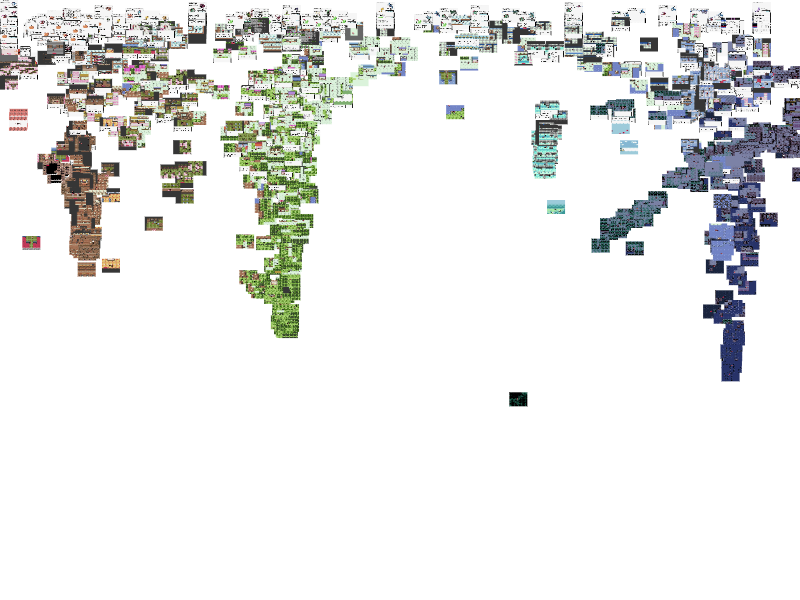
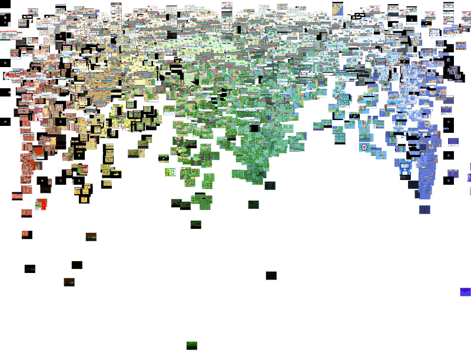
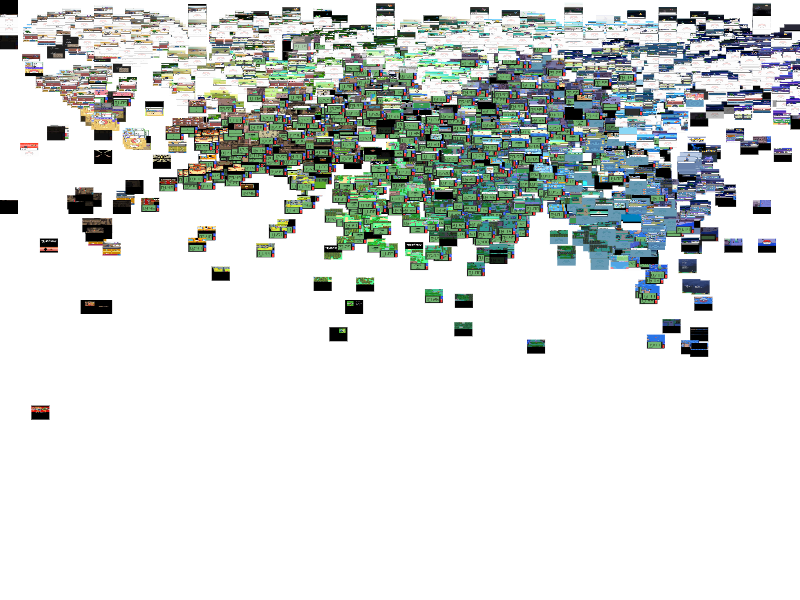
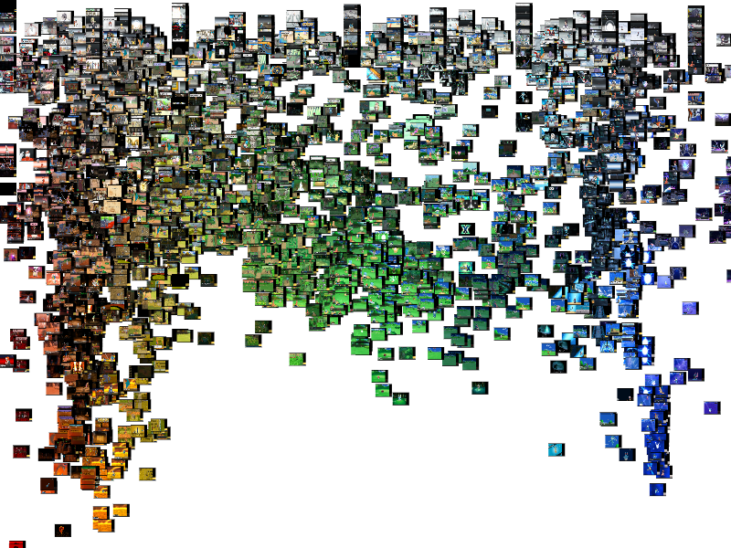
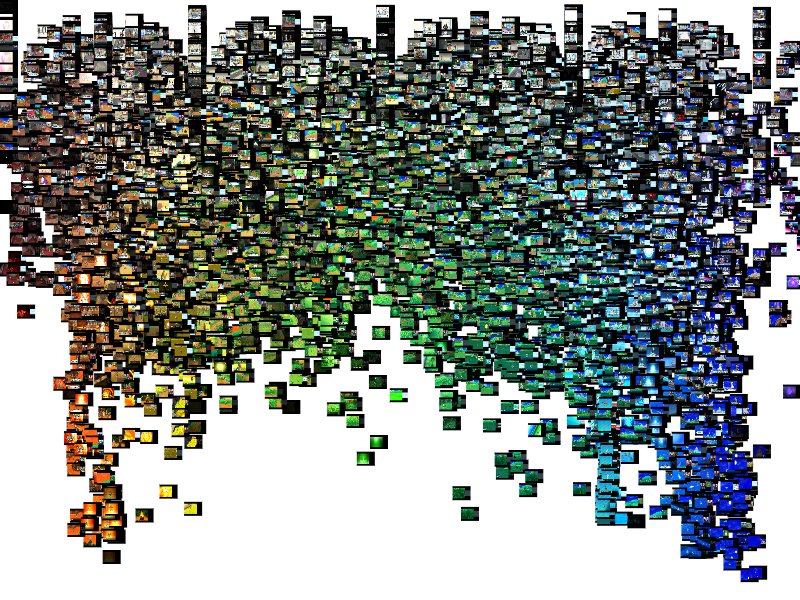
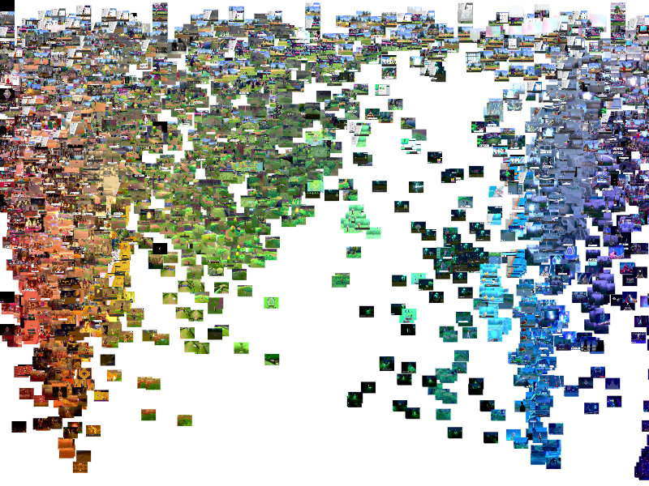
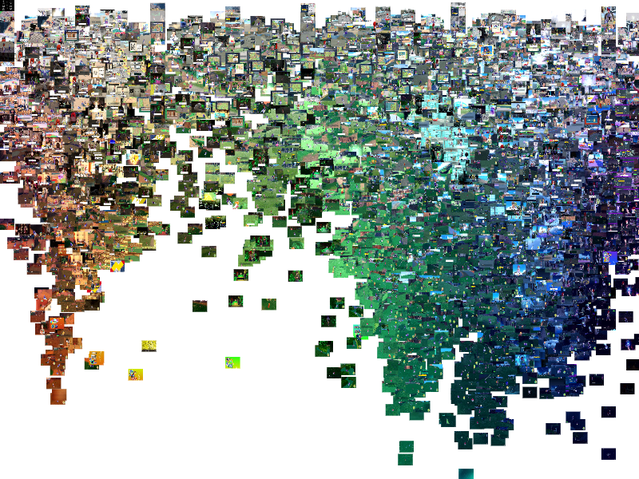

Results
After putting my image data (a grand total of 51,913 images) into IMJ tool to plot the images based on hue (x-axis) and saturation (y-axis), I found that earlier games had more defined clusters of colors, and newer games had more colors. In other words, earlier games had more distinct color groups, and with each game there were mostly more and more colors across the spectrum. For example, in Pokémon Blue, there was only one color group since the technology only allowed for one color. While I expected there to be more colors as technology progressed, it is interesting to see how the use of color and color groups in games has shifted over time.

Pokémon Blue - 3259 Images - Game Boy
Pokémon Silver - 4975 Images - Game Boy Color
Pokémon Ruby - 5101 Images - Game Boy Advance
Pokémon Diamond - 8022 Images (from 2 videos: part 1 and 2) - Nintendo DS

Pokémon Black - 3147 Images - Nintendo DS
Pokémon X - 3650 Images - Nintendo 3DS
Pokémon Sun - 8656 Images - Nintendo 3DS
Pokémon Sword - 6543 Images - Nintendo Switch
Pokémon Violet - 8560 Images - Nintendo Switch
Based on these initial findings, I decided that I want to expand upon color groupings using python code, which is something I have not done yet but will do in the future. I also did a lot of other analysis of the data using python code that is currently inconclusive and needs to be expanded upon later, but I have some current interactive visualizations. The first way I attempted to analyze the code was finding the amount of unique colors for each game. The goal for this program was to find the number of unique colors, and take the number for each game and put them in an interactive graph. While the code works, the euclidean color distance formula might need to be tweaked since I am currently unsure what should or should not be considered a different color. Additionally, the code worked for a small test dataset, but was way too slow to be feasible for thousands of images. For example, I estimated that it would take like 72 hours if it continued at a similar rate to complete the analysis for one whole game. In the future, I plan to expand on this code to be faster and more efficient. I also created another python program that creates color palettes for each game with the top 50 colors. My initial test was fairly successful, and provided me with an interactive graph. Though the results are shown here, they are fairly inconclusive, and need to be tweaked to fit the scope of this project better. For example, I don’t think that showing all of the color palettes at the same time really does anything for the project, and I also might need to tweak the amount of colors in the palette to be smaller, such as the top 10 or 20 colors so it doesn't seem so messy. Additionally, I think I want to focus more on color groups in the future as well.
Although my color palette visualization needs to be refined, it does still showcase the increase of color groupings over time and amount of colors. I am still not sure why my code processed the folders out of order, which is why all of the numbers are mixed up. To get the most out of this vizualization, I reccomend turning off all of the tabs and then turning them on one at a time to see the color palette for each individual game.
Limitations of This Project
Apart from the current shortcomings of the project, there are some limitations of this dataset. For example, Every playthrough of a video game is different per person, so that might affect the results of my analysis. Additionally, stylistic choices by the game developers might also affect the colors and other factors such as saturation in the games. This is why I chose to only analyze the Pokémon games, but there still may be some variations.
What's Next?
- Updating the formatting and appearance of this website because it… needs some work.
- Accessibility of the website which is currently lacking; I have some alt text but more needs to be updated, I also want to make it screen-reader friendly, I need to optimize this website for mobile devices, and I would like to make it so that the data can be accessed/downloaded directly from this website.
- Adding notes in my GitHub repository to make it user friendly.
- Continuing my analysis of my data through code.